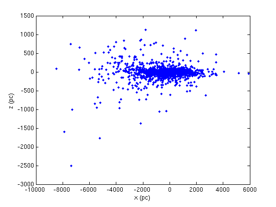
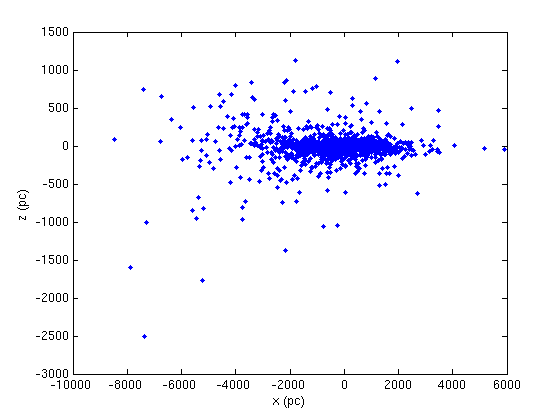

Shape and Scale of the Milky Way
Here the student plots the positions of star clusters and shows the relative distribution around the Milky Way galaxy of open clusters compared to globular clusters through projection onto the xy, xz, and yz planes where x is defined along the direction to the galactic center and z is height in direction of the galactic North pole.
Contents
Part I
First, let us plot the survey of open clusters in equatorial coordinates, namely right ascension (in hours) and declination (in degrees) above or below the equatorial plane.
% Before we do that we have to load the data. While the data source with % the full data is listed in the lab handout, the numerical values needed % here have been compiled into a simplified table found in % clusters_relevant.txt. load clusters_relevant.txt cr = clusters_relevant; % In this table the first, second, and third columns contain the RA in % hours, minutes, and seconds and these values must be combined into a % single decimal value of hours: RA = cr(:,1) + cr(:,2)/60 + cr(:,3)/3600; % The same goes for the declination, though it is given by degrees, arcmin, % and arcsec in the fourth, fifth, and sixth columns respectively: dec = cr(:,4) + (cr(:,5)/60 + cr(:,6)/3600).*cr(:,4)./abs(cr(:,4)); % Note that the cr/abs(cr) term simply insures the sign carried by the % fourth column value is carried over to the other two values added, as % they will have matching sign. % Now let's plot the open clusters in RA vs dec, i.e. equatorial % coordinates. figure(1); clf plot(RA,dec,'.') xlabel('RA (hrs)') ylabel('dec (degrees)') % We can also plot, with a red circle, the location of the galactic center % in order to get a feel for how open clusters are distributed in the % galactic plane. Since the equatorial plane is tilted with respect to the % galactic plane, the clusters, which gather mostly in the galactic plane, % follow a sinusoidal curve on this plot. hold on gal = [17 + 45/60. + 40.04/3600, -29 - 28.1/3600]; plot(gal(1),gal(2),'or')
Part II
Now we plot the distribution of the same 1777 open clusters, but this time we have distance information about the clusters and can plot them in 3-space rather than just their projection onto the celestial sphere as we did in Part I.
% Load the data in a new, simplfiied, table, where this time the third % column gives distance in pc and the coordinates are in galactic % coordinates (longitude and latitude both in degrees). load clusters_relevantGAL.txt crgal = clusters_relevantGAL; % We must change from degrees to radians since we will use cos and sin % functions to transform from galactic (i.e. polar) to cartesian % coordinates: lon = crgal(:,1).*2*pi/360.0; lat = crgal(:,2).*2*pi/360.0; xoc = crgal(:,3).*cos(lat).*cos(lon); yoc = crgal(:,3).*cos(lat).*sin(lon); zoc = crgal(:,3).*sin(lat); % Now let's plot the projection of the open clustes onto the x-y plane % (distribution as viewed from above galaxy): hold off figure(2); clf plot(xoc,yoc, '.') xlabel('x (pc)') ylabel('y (pc)') % Also the projection onto the other two planes intersecting the galactic % center, one perpendicular to the line of sight from earth and one % parallel: figure(3); clf plot(xoc,zoc, '.') xlabel('x (pc)') ylabel('z (pc)') figure(4); clf plot(yoc,zoc, '.') xlabel('y (pc)') ylabel('z (pc)')
 
 Part III
Now we load an analagous table of data for globular clusters and plot them in the same plane projections as we did for the open clusters:
load mwgc_short_relevant.txt crgal = mwgc_short_relevant; lon = crgal(:,1).*2*pi/360.0; lat = crgal(:,2).*2*pi/360.0; xgc = 1000.*crgal(:,3).*cos(lat).*cos(lon); % This time distance is tabulated in kpc, so we must multiply by 10^3 to convert. ygc = 1000.*crgal(:,3).*cos(lat).*sin(lon); zgc = 1000.*crgal(:,3).*sin(lat); % We plot the projections of the open clusters in blue and the globular clusters in red: hold off figure(5); clf plot(xoc,yoc, '.') hold on plot(xgc,ygc, '.r') xlabel('x (pc)') ylabel('y (pc)') figure(6); clf plot(xoc,zoc, '.') hold on plot(xgc,zgc, '.r') xlabel('x (pc)') ylabel('z (pc)') figure(7); clf plot(yoc,zoc, '.') hold on plot(ygc,zgc, '.r') xlabel('y (pc)') ylabel('z (pc)') % It is clear that globular clusters are not bound to the plane of the % galaxy and trace the dark matter potential well better than open % clusters. This picture is also consistent with our knowledge that % globular clusters are often much older than open clusters, which much % more often form in star-forming regions in the dense planes of galaxies.